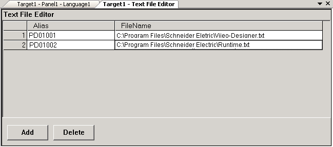

Error 2094: [Data Files] [data file node] has duplicate alias names [alias name].
The defined data file node (Text or Sound) lists two or more files with the same alias name. Using the same alias makes it impossible to identify the file at runtime.
Solution:
In the Text File and Sound File editors, make sure the alias for each text or sound file is unique.
